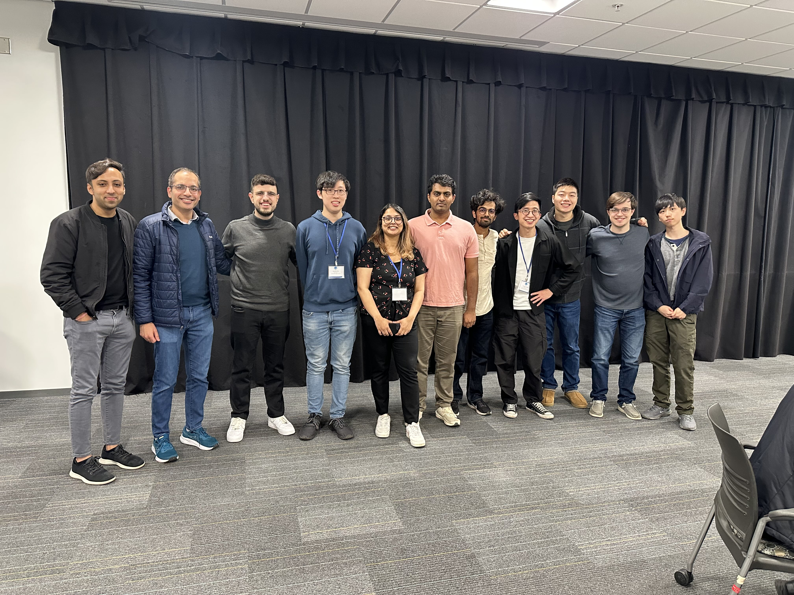

CSLSC 2025
I’m proud to announce that CSLSC 2025 was a resounding success! This year, I chaired for the Machine Learning and Signal Processing (MLSP) session alongside Asher Mai. Guest speakers included Dr. Cem Subakan from Université Laval, and Ziyang Chen from the University of Michigan. We also had a handful of student presenters, of which included Trung-Hieu Hoang who won “best MLSP student talk.” Thank you to everyone who presented and helped in the organization process for the conference, we couldn’t have done this without you.
